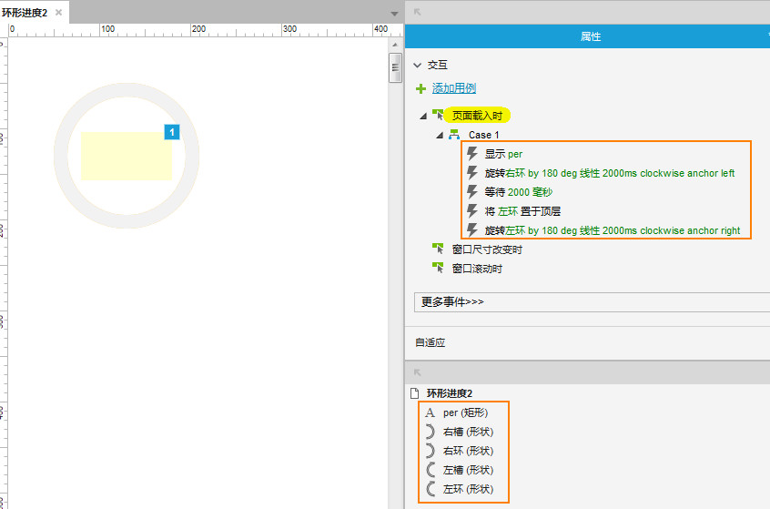
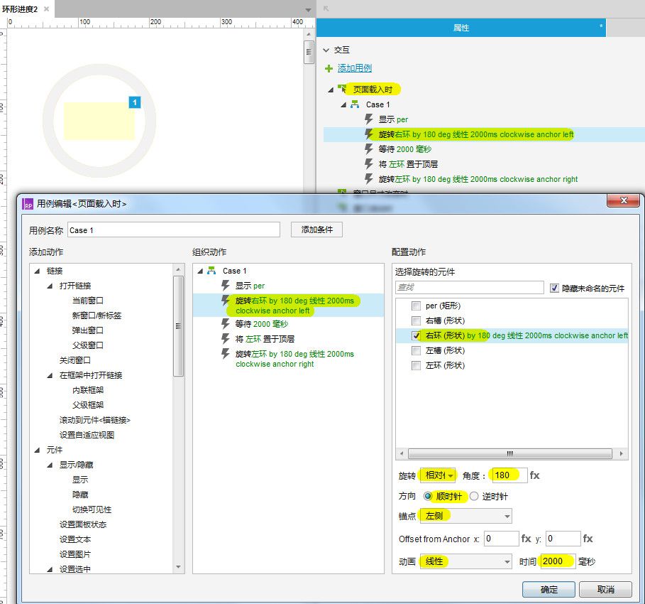
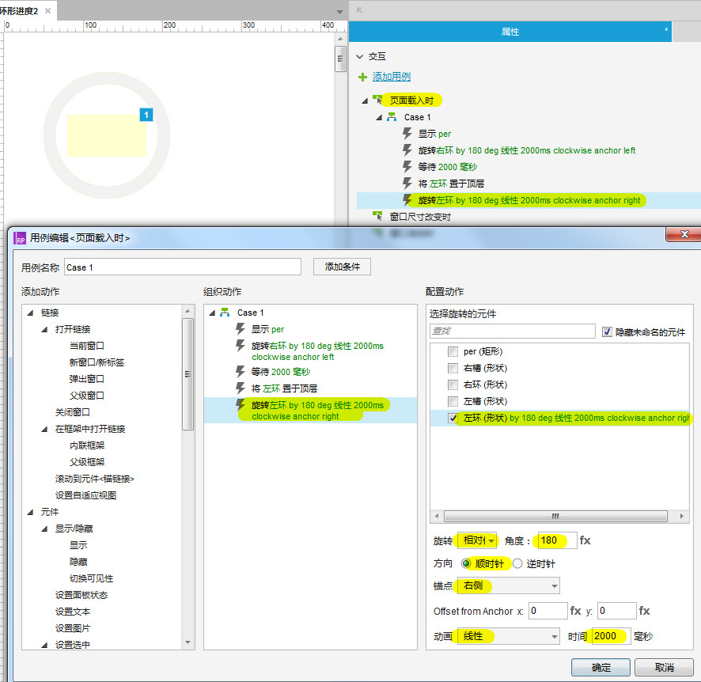
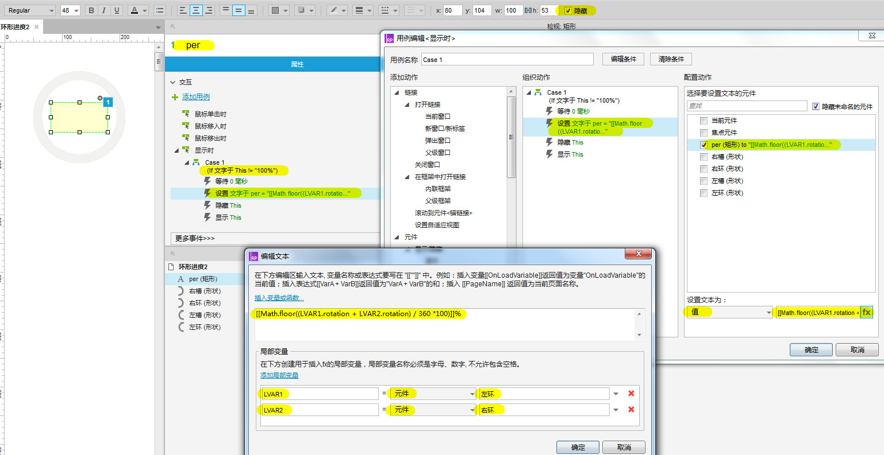

法一
实现原理
环形进度
- 制作 4 个半圆环，分别命名为：左槽、右槽、左环、右环，其中左槽、右槽为底色圆环，左环、右环为加载时显示的色彩圆环；
- 4 个半圆环的排序层次从上到下依次为：右槽、右环、左槽、左环；
- 让右环以左侧为中心顺时针线性旋转 180，时间为 2000ms，此时右环旋转到左槽之上；
- 等待 2000ms
- 将左环置于顶层
- 让左环以右侧为中心顺时间线性旋转 180，时间为 2000ms
- 至此环形进度的效果制作完成
添加文字进度
- 新建文字标签并命名为：per，用于显示文字进度
- per 默认为隐藏状态，页面载入时设置其 显示；
- per 显示时：当 per 元件文字 != 100% 时，等待 0ms，设置 per 的文本为：[[Math.floor((LVAR1.rotation + LVAR2.rotation) / 360 *100)]]% ，LVAR1、LVAR2 为左环和右环；
- 隐藏 per
- 显示 per
- 至此文字进度添加完成
制作步骤
制作 4 个半圆环，分别命名为：左槽、右槽、左环、右环，其中左槽、右槽为底色圆环，左环、右环为加载时显示的色彩圆环；
4 个半圆环的排序层次从上到下依次为：右槽、右环、左槽、左环；

让右环以左侧为中心顺时针线性旋转 180，时间为 2000ms

让左环以右侧为中心顺时间线性旋转 180，时间为 2000ms

添加文字进度
